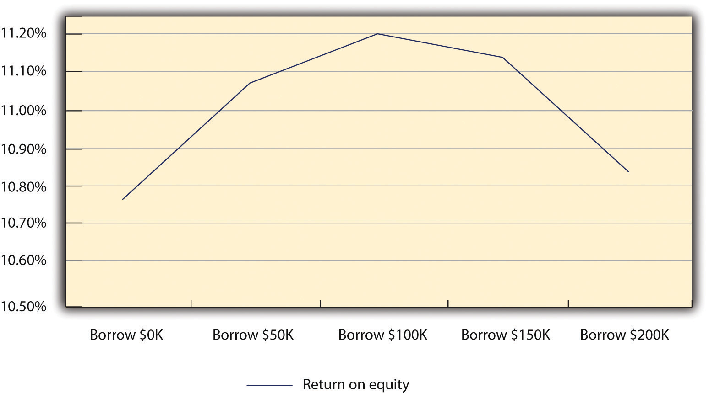

A breakeven analysisUsed to determine the amount of sales volume a company needs to start making a profit: when its total sales or revenues equal its total expenses. is remarkably useful to someone considering starting up a business. It examines a business’s potential costs—both fixed and variable—and then determines the sales volume necessary to produce a profit for given selling price.“Breakeven Analysis: Know When You Can Expect a Profit,” Small Business Administration, accessed December 2, 2011, www.sba.gov/content/breakeven-analysis -know-when-you-can-expect-profit. This information enables one to determine if the entire concept is feasible. After all, if one has to sell five million shoes in a small town to turn a profit, one would immediately recognize that there may be a severe problem with the proposed business model.
A breakeven analysis begins with several simplifying assumptions. In its most basic form, it assumes that you are selling only one product at a particular price, and the production cost per unit is constant over a wide range of values. The purpose of a breakeven analysis is to determine the sales volume that is required so that you neither lose money nor make a profit. This translates into a situation in which the profit level is zero. Put in equation form, this simply means
total revenue − total costs = $0.By moving terms, we can see that the break-even point occurs when total revenues equal total costs:
total revenue = total costs.We can define total revenue as the selling price of the product times the number of units sold, which can be represented as follows:
total revenue (TR) = selling price (SP) × sales volume (Q) TR = SP × Q.Total costs are seen as being composed of two parts: fixed costs and total variable costs. Fixed costs exist whether or not a firm produces any product or has any sales and consist of rent, insurance, property taxes, administrative salaries, and depreciation. Total variable costs are those costs that change across the volume of production. As part of the simplifying assumptions of the breakeven analysis, it is assumed that there is a constant unit cost of production. This would be based on the labor input and the amount of materials required to make one unit of product. As production increases, the total variable cost will likewise increase, which can be represented as follows:
total variable costs (TVC) = variable cost per unit (VC) × sales quantity (Q) TVC = VC × Q.Total costs are simply the summation of fixed costs plus the total variable costs:
total costs (TC) = [fixed costs (FC) + total variable cost (TVC)] TC = FC + TVC.The original equation for the break-even point can now be rewritten as follows:
[selling price (SP) × sales volume (Q)] − total costs (TC) = $0 (SP × Q) − TC = $0.At the break-even point, revenues equal total costs, so this equation can be rewritten as
SP × Q = TC.Given that the total costs equal the fixed costs plus the total variable costs, this equation can now be extended as follows:
selling price (SP) × sales volume (Q) = [fixed costs (FC) + total variable costs (TVC)] SP × Q = FC + TVC.This equation can be expanded by incorporating the definition of total variable costs as a function of sales volume:
SP × Q = FC + (VC × Q).This equation can now be rewritten to solve for the sales value:
(SP × Q) − (VC × Q) = FC.Because the term sales volume is present in both terms on the left-hand side of the equation, it can be factored to produce
Q × (SP − VC) = FC.The sales value to produce the break-even point can now be solved for in the following equation:
Q = FC / (SP − VC).The utility of the concept of break-even point can be illustrated with the following example.
Carl Jacobs, a retired engineer, was a lifelong enthusiast of making plastic aircraft models. Over thirty years, he entered many regional and national competitions and received many awards for the quality of his model building. Part of this success was due to his ability to cast precision resin parts to enhance the look of his aircraft models. During the last ten years, he acquired a reputation as being an expert in this field of creating these resin parts. A friend of his, who started several businesses, suggested that Carl look at turning this hobby into a small business opportunity in his retirement. This opportunity stemmed from the fact that Carl had created a mold into which he could cast the resin part for a particular aircraft model; this same mold could be used to produce several hundred or several thousand copies of the part, all at relatively low cost.
Carl had experience only with sculpturing and casting parts in extremely low volumes—one to five parts at a time. If he were to create a business format for this hobby, he would have to have a significant investment in equipment. There would be a need to create multiple metal molds of the same part so that they could be cast in volume. In addition, there would be a need for equipment for mixing and melting the chemicals that are required to produce the resin. After researching, he could buy top-of-the-line equipment for a total of $33,000. He also found secondhand but somewhat less efficient equipment. Carl estimated that the total cost of acquiring all the necessary secondhand equipment would be close to $15,000. After reviewing the equipment specifications, he concluded that with new equipment, the unit cost of producing a set of resin parts for a model would run $9.25, whereas the unit cost for using the secondhand equipment would be $11.00. After doing some market research, Carl determined that the maximum price he could set for his resin sets would be $23.00. This would be true whether the resin sets were produced with new or secondhand equipment.
Carl wanted to determine how many resin sets would have to be sold to break even with each set of equipment. For simplicity’s sake, he assumed that the initial purchase price of both options would be his fixed cost. His analysis is presented in Table 10.1 "break-even point Analysis".
Table 10.1 break-even point Analysis
| Option | Fixed Costs | Variable Cost | Selling Price | break-even point |
|---|---|---|---|---|
| New equipment | $33,000 | $9.25/unit | $23.00 |
Q = $33,000 / ($23.00 − $9.25) Q = $33,000 / $13.75 Q = 2,400 units |
| Secondhand equipment | $15.000 | $11.00/unit | $23.00 |
Q = $15,000 / ($23.00 − $11.00) Q = $15,000 / $12.00 Q = 1,250 units |
From this analysis, he could see that although the secondhand equipment is not as efficient (hence the higher variable cost per unit), it will break even at a significantly lower level of sales than the new equipment. Carl was still curious about the profitability of the two sets of equipment at different levels of sales. So he ran the numbers to calculate the profitability for both sets of equipment at sales levels of 1,000 units, 3,000 units, 5,000 units, 7,500 units, and 10,000 units. The results are presented in Table 10.2 "Sales Level versus Profit Breakdown".
Table 10.2 Sales Level versus Profit Breakdown
| Secondhand Equipment | New Equipment | |||||||
|---|---|---|---|---|---|---|---|---|
| Sales Level | Revenue | Fixed Cost | Total Variable Costs | Profit | Revenue | Fixed Cost | Total Variable Costs | Profit |
| 1,000 | $23,000 | $15,000 | $11,000 | $(3,000) | $23,000 | $33,000 | $9,250 | $(19,250) |
| 3,000 | $69,000 | $15,000 | $33,000 | $21,000 | $69,000 | $33,000 | $27,750 | $8,250 |
| 5,000 | $115,000 | $15,000 | $55,000 | $45,000 | $115,000 | $33,000 | $46,250 | $35,750 |
| 7,500 | $172,500 | $15,000 | $82,500 | $75,000 | $172,500 | $33,000 | $69,375 | $70,125 |
| 10,000 | $230,000 | $15,000 | $110,000 | $105,000 | $230,000 | $33,000 | $92,500 | $104,500 |
From these results, it is clear that the secondhand equipment is preferable to the new equipment. At 10,000 units, the highest annual sales that Carl anticipated, the overall profits would be greater with secondhand equipment.
Breakeven Analysis: Economics for Managers
(click to see video)A slide show showing breakeven calculations.
Perform a Breakeven Analysis with Excel’s Goal Seek Tool
(click to see video)Shows how Excel can be used to conduct sophisticated breakeven analyses.
This site provides a straightforward description of breakeven analysis with an example.
In Section 10.2 "Financial Control", the need to balance debt and equity, with respect to financing a firm’s operations, is briefly discussed. A critical financial decision for any business owner is determining the extent of financial leverage a firm should acquire. Building a firm using debt amplifies a return of equity to the owners; however, the acquisition of too much debt, which cannot be repaid, may lead to a Chapter 1 "Foundations for Small Business"1 bankruptcy, which represents a complete failure of the firm.
In the early 1950s, the field of finance tried to describe the effect of financial leverage on the valuation of a firm and its cost of capital.David Durand, “Cost of Debt and Equity Funds for Business: Trends and Problems of Measurement,” Conference on Research in Business Finance (New York: National Bureau of Economic Research, 1952), 220. A major breakthrough occurred with the works of Franco Modigliani and Merton Miller.Franco Modigliani and Merton Miller, “The Cost of Capital, Corporation Finance and the Theory of Investment,” American Economic Review 48, no. 3 (1958): 261–97; Franco Modigliani and Merton Miller, “Taxes and the Cost of Capital: A Correction,” American Economic Review 53 (1963): 433–43. Reduced to simplest form, their works hypothesized that the valuation of a firm increases as the financial leverage increases. This is true but only up to a point. When a firm exceeds a particular value of financial leverage—namely, it has assumed too much debt—the overall value of the firm begins to decline. The point at which the valuation of a firm is maximized determines the optimal capital structure of the business. The model defined valuation as a firm’s earnings before interest and taxes (EBIT) divided by its cost of capital. Cost of capitalThe weighted average of a firm’s debt and equity, where equity is directly related to the firm’s stock. is a weighted average of a firm’s debt and equity, where equity directly relates to a firm’s stock. The reality is that this model is far more closely attuned, from a mathematical standpoint, to the corporate entity. It cannot be directly applied to most small businesses. However, the basic notion that there is some desired level of debt to equity, a level that yields maximum economic benefit, is germane, as we will now illustrate.
Let us envision a small family-based manufacturing firm that until now has been able to grow through the generation of internal funds and the equity that has been invested by the original owners. Presently, the firm has no long-term debt. It has a revolving line of credit, but in the last few years, it has not had to tap into this line of credit to any great extent. The income statement for the year 2010 and the projected income statement for 2011 are given in Table 10.3 "Income Statement for 2010 and Projections for 2011". In preparing the projected income statement for 2011, the firm assumed that sales would grow by 7.5 percent due to a rapidly rising market. In fact, the sales force indicated that sales could grow at a much higher rate if the firm can significantly increase its productive capacity. The projected income statement estimates the cost of goods sold to be 65 percent of the firm’s revenue. This estimate is predicated on the past five years’ worth of data. Table 10.4 "Abbreviated Balance Sheet" shows an abbreviated balance sheet for 2010 and a projection for 2011. The return on assets (ROA) and the return on equity (ROE) for 2010 and the projected values for 2011 are provided in Table 10.5 "ROA and ROE Values for 2010 and Projections for 2011".
Table 10.3 Income Statement for 2010 and Projections for 2011
| 2010 | 2011 | |
|---|---|---|
| Revenue | $475,000 | $510,625 |
| Cost of goods sold | $308,750 | $331,906 |
| Gross profit | $166,250 | $178,719 |
| General sales and administrative | $95,000 | $102,125 |
| EBIT | $71,250 | $76,594 |
| Interest | $— | $— |
| Taxes | $21,375 | $22,978 |
| Net profit | $49,875 | $53,616 |
Table 10.4 Abbreviated Balance Sheet
| 2010 | 2011 | |
|---|---|---|
| Total assets | $750,000 | $765,000 |
| Long-term debt | $— | $— |
| Owners’ equity | $750,000 | $765,000 |
| Total debt and equity | $750,000 | $765,000 |
Table 10.5 ROA and ROE Values for 2010 and Projections for 2011
| 2010 (%) | 2011 (%) | |
|---|---|---|
| Return on assets | 6.65 | 7.01 |
| Return on equity | 6.65 | 7.01 |
After preparing these projections, the owners were approached by a company that manufactures computer-controlled machinery. The owners were presented with a series of machines that will not significantly raise the productive capacity of their business while also reducing the unit cost of production. The owners examined in detail the productive increase in improved efficiency that this computer-controlled machinery would provide. They estimated that demand in the market would increase if they had this new equipment, and sales could increase by 25 percent in 2011, rather than 7.5 percent as they had originally estimated. Further, the efficiencies brought about by the computer-controlled equipment would significantly reduce their operating costs. A rough estimate indicated that with this new equipment the cost of goods sold would decrease from 65 percent of revenue to 55 percent of revenue. These were remarkably attractive figures. The only reservation that the owners had was the cost of this new equipment. The sales price was $200,000, but the business did not have this amount of cash available. To raise this amount of money, they would either have to bring in a new equity partner who would supply the entire amount, borrow the $200,000 as a long-term loan, or have some combination of equity partnership and debt. They first approached a distant relative who has successfully invested in several businesses. This individual was willing to invest $50,000, $100,000, $150,000, or the entire $200,000 for taking an equity position in the firm. The owners also went to the bank where they had line of credit and asked about their lending options. The bank was impressed with the improved productivity and efficiency of the proposed new machinery. The bank was also willing to lend the business $50,000, $100,000, $150,000, or the entire $200,000 to purchase the computer-controlled equipment. The bank, however, stipulated that the lending rate would depend on the amount that was borrowed. If the firm borrowed $50,000, the interest rate would be 7.5 percent; if the amount borrowed was $100,000, the interest rate would increase to 10 percent; if $150,000 was the amount of the loan, the interest rate would be 12.5 percent; and if the firm borrowed the entire $200,000, the bank would charge an interest rate of 15 percent.
To correctly analyze this investment opportunity, the owners could employ several financial tools and methods, such as net present value (NPV)A financial model that examines future cash flows from an investment and discounts the value of those investments by a specified interest rate. It then subtracts this discounted cash flow from the original value of the investment to determine whether or not a business should make an investment.. This approach examines a lifetime stream of additional earnings and cost savings for an investment. The cash flow that might exist is then discounted by the cost of borrowing that money. If the NPV is positive, then the firm should undertake the investment; if it is negative, the firm should not undertake the investment. This approach is too complex—for the needs of this text—to be examined in any detail. For the purpose of illustration, it will be assumed that the owners began by looking at the impact of alternative investment schemes on the projected results for 2011. Obviously, any in-depth analysis of this investment would have to entail multiyear projections.
They examined five scenarios:
Table 10.6 "Income Statement for the Five Scenarios" presents the income statement for these five scenarios. (An abbreviated balance sheet for the five scenarios is given in Table 10.7 "Abbreviated Balance Sheet for the Five Scenarios".) All five scenarios begin with the assumption that the new equipment would improve productive capacity and allow sales to increase, in 2011, by 25 percent, rather than the 7.5 percent that had been previously forecasted. Likewise, all five scenarios have the same cost of goods sold, which in this case is 55 percent of the revenues rather than the anticipated 65 percent if the new equipment is not purchased. All five scenarios have the same EBIT. The scenarios differ, however, in the interest payments. The first scenario assumes that all $200,000 would be provided by a relative who is taking an equity position in the firm. This is not a loan, so there are no interest payments. In the remaining four scenarios, the interest payments are a function of the amount borrowed and the corresponding interest rate. The payment of interest obviously impacts the earnings before taxes (EBT) and the amount of taxes that have to be paid. Although the tax bill for those scenarios where money has been borrowed is less than the scenario where the $200,000 is provided by equity, the net profit also declines as the amount borrowed increases.
Table 10.6 Income Statement for the Five Scenarios
| Borrow $0 | Borrow $50,000 | Borrow $100,000 | Borrow $150,000 | Borrow $200,000 | |
|---|---|---|---|---|---|
| Revenue | $593,750 | $593,750 | $593,750 | $593,750 | $593,750 |
| Cost of goods sold | $326,563 | $326,563 | $326,563 | $326,563 | $326,563 |
| Gross profit | $267,188 | $267,188 | $267,188 | $267,188 | $267,188 |
| General sales and administrative | $118,750 | $118,750 | $118,750 | $118,750 | $118,750 |
| EBIT | $148,438 | $148,438 | $148,438 | $148,438 | $148,438 |
| Interest | $— | $3,750 | $10,000 | $18,750 | $30,000 |
| Taxes | $44,531 | $43,406 | $41,531 | $38,906 | $35,531 |
| Net profit | $103,906 | $101,281 | $96,906 | $90,781 | $82,906 |
Table 10.7 Abbreviated Balance Sheet for the Five Scenarios
| Borrow $0 | Borrow $50,000 | Borrow $100,000 | Borrow $150,000 | Borrow $200,000 | |
|---|---|---|---|---|---|
| Total assets | $965,000 | $965,000 | $965,000 | $965,000 | $965,000 |
| Long-term debt | $— | $50,000 | $100,000 | $150,000 | $200,000 |
| Owners’ equity | $965,000 | $915,000 | $865,000 | $815,000 | $765,000 |
| Total debt and equity | $965,000 | $965,000 | $965,000 | $965,000 | $965,000 |
The owners then calculated the ROA and the ROE for the five scenarios (see Table 10.8 "ROA and ROE for the Five Scenarios"). When they examined these results, they noticed that the greatest ROA occurred when the new machinery was financed exclusively by equity capital. The ROA declined as they began to fund new machinery with debt: the greater the debt, the lower the ROA. However, they saw a different situation when they looked at the ROE for each scenario. The ROE was greater in each scenario where the machinery was financed either exclusively or to some extent by debt. In fact, the lowest ROE (the firm borrowed the entire $200,000) was 50 percent higher than if the firm did not acquire the new equipment. A further examination of the ROE results provides a very interesting insight. The ROE increases as the firm borrows up to $100,000 of debt. When the firm borrows more money ($150,000 or $200,000), the ROE declines (see Figure 10.3 "ROE for the Five Scenarios"). This is a highly simplified example of optimal capital structure. There is a level of debt beyond which the benefits measured by ROE begins to decline. Small businesses must be able to identify their “ideal” debt-to-equity ratio.
Table 10.8 ROA and ROE for the Five Scenarios
| Borrow $0 | Borrow $50,000 | Borrow $100,000 | Borrow $150,000 | Borrow $200,000 | |
|---|---|---|---|---|---|
| ROA | 10.77% | 10.50% | 10.04% | 9.41% | 8.59% |
| ROE | 10.77% | 11.07% | 11.20% | 11.14% | 10.84% |
Figure 10.3 ROE for the Five Scenarios
The owners decided to carry their analysis one step further; they wondered if the sales projections were too enthusiastic. They were concerned about the firm’s ability to repay any loan should there be a drop in sales. Therefore, they decided to examine a worst-case scenario. Such analyses are absolutely critical if one is to fully evaluate the risk of undertaking debt. They ran the numbers to see what the results would be if there was a 25 percent decrease in sales in 2011 rather than a 25 percent increase in sales compared to 2010. The results of this set of analyses are in Table 10.9 "Income Statement for the Five Scenarios Assuming a 25 Percent Decrease in Sales". Even with a heavy debt burden for the five scenarios, the firm is able to generate a profit, although it is a substantially lower profit compared to if sales increased by 25 percent. They examined the impact of this proposed declining sales on ROA and ROE. These results are found in Table 10.10 "ROA and ROE for the Five Scenarios under the Condition of Declining Sales".
Table 10.9 Income Statement for the Five Scenarios Assuming a 25 Percent Decrease in Sales
| Borrow $0 | Borrow $50,000 | Borrow $100,000 | Borrow $150,000 | Borrow $200,000 | |
|---|---|---|---|---|---|
| Revenue | $356,250 | $356,250 | $356,250 | $356,250 | $356,250 |
| Cost of goods sold | $195,938 | $195,938 | $195,938 | $195,938 | $195,938 |
| Gross profit | $160,313 | $160,313 | $160,313 | $160,313 | $160,313 |
| General sales and administrative | $71,250 | $71,250 | $71,250 | $71,250 | $71,250 |
| EBIT | $89,063 | $89,063 | $89,063 | $89,063 | $89,063 |
| Interest | $— | $3,750 | $10,000 | $18,750 | $30,000 |
| Taxes | $26,719 | $25,594 | $23,719 | $21,094 | $17,719 |
| Net profit | $62,344 | $59,719 | $55,344 | $49,219 | $41,344 |
Table 10.10 ROA and ROE for the Five Scenarios under the Condition of Declining Sales
| Borrow $0 | Borrow $50,000 | Borrow $100,000 | Borrow $150,000 | Borrow $200,000 | |
|---|---|---|---|---|---|
| ROA | 6.46% | 6.19% | 5.74% | 5.10% | 4.28% |
| ROE | 6.46% | 6.53% | 6.40% | 6.04% | 5.40% |
Debt Financing versus Equity Financing: Which Is Best for Us?
(click to see video)Overview of the benefits and dangers associated with debt financing and equity financing.
Capital Structure
(click to see video)Compares capital structure to a commercial aircraft.
Lecture in Capital Structure
(click to see video)Explains why capital structure matters.
The Capital Structure of a Company
(click to see video)Discusses the issue of long-term and short-term debt in capital structure.